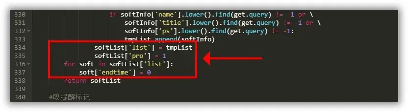
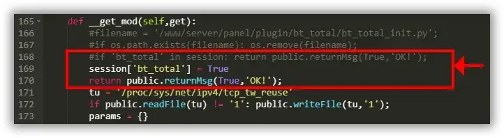

# 宝塔面板v7.7.0-解锁Nginx防火墙及网站监控报表-绕过绑定账号
测试环境：Ubuntu / Debian / CentOS 测试时间：2021-12-20 宝塔版本： 7.7.0 仅测试了Nginx防火墙及网站监控报表两款插件，其它收费插件未测试 其它系统及版本未进行测试，请自行验证，请勿在生产环境下进行测试！ 注意：修改代码后需要重启面板服务才能使其生效，如果面板出现乱码重启服务器即可；
解锁所有付费插件为永不过期
文件路径：www/server/panel/data/plugin.json 搜索字符串："endtime": -1 全部替换为 "endtime": 999999999999 显示永久专业版或企业版标识
文件路径：www/server/panel/data/plugin.json 查找字符串：name": "coll_admin"，将panel_pro或panel_ltd后面的-1改为0 禁止解锁插件后自动修复为免费版
文件路径：www/server/panel/data/repair.json 查找字符串："id": 16，将这段修复权限的代码删除 禁止宝塔面板检测升级，防止失效
文件路径：www/server/panel/data/plugin.json 查找字符串：name": "coll_admin"，将这段里的update_mgs删除或者改为null 下面是2021/08/24的方法，上面是最新的 修改后不能使用问题：如果修改后出现软件中心页面空白，那是因为代码位置有问题，可以参考下面示例图代码位置 位置一定要一致 开始 打开目录/www/server/panel/class找到并编辑panelplugin.py文件 使用Ctrl+F搜索并找到softList['list'] = tmpList这段代码，在其下方添加如下代码：
softList['pro'] = 1
for soft in softList['list']:
soft['endtime'] = 0
2
3
示例： 
修改完成后重启面板，重启完成后就可以直接安装收费的插件了，Nginx防火墙也可以直接安装使用
网站监控报表 如果需要使用网站监控报表还需另外修改一次代码： 安装好网站监控报表插件后打开/www/server/panel/plugin/total目录并编辑total_main.py文件 使用Ctrl+F搜索并找到if 'bt_total' in session: return public.returnMsg(True,'OK!');这段代码 在这段代码前加上#将其注释掉，并在其下方加入以下代码：
session['bt_total'] = True
return public.returnMsg(True,'OK!');
2
示例： 
然后再次重启面板，即可使用网站监控报表插件了；
一键消除宝塔的强制登录方法简单粗暴，但是非常有效~
复制该命令到终端运行即可：rm -f /www/server/panel/data/bind.pl